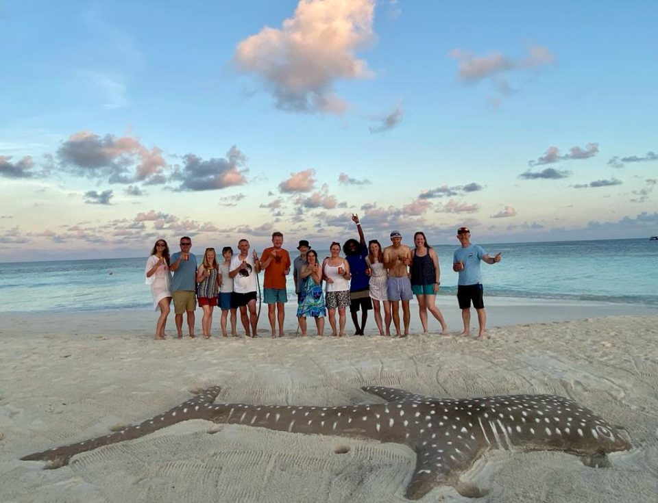
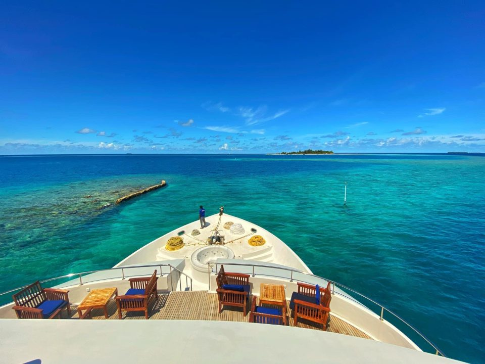
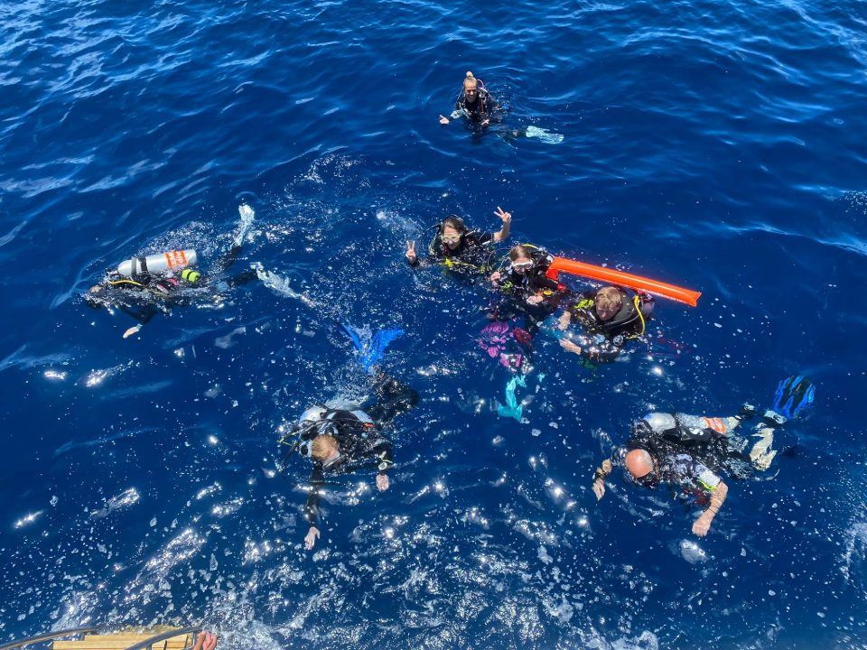
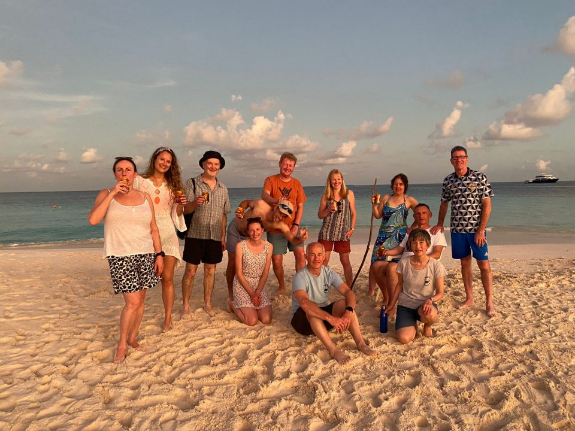
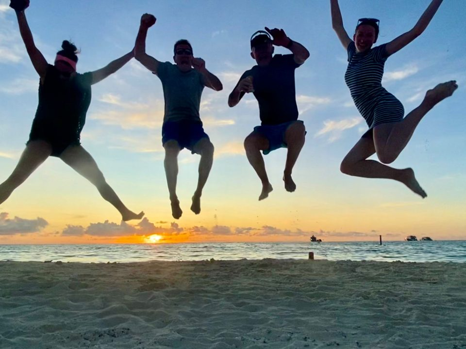

Maldives, 22nd - 30th April 2022

After two years of postponements (thanks to you-know-what), twelve Argonauts and two honorary Argonauts finally jetted off to the Maldives in late April 2022!
We spent a week with Emperor Divers, on board the Emperor Leo. It was a great boat and team - and we managed to pack in 17 dives along with some snorkelling too.
Starting and ending in the capital Male we journeyed through the turquoise waters of Alifu Dhaalu Atoll, Vaavu Atoll and South Male Atoll. We were lucky with good weather and water conditions throughout, but of course the Maldives is known for its strong currents!

We had a real range of different dives from reefs to pinnacles and even a small wreck site (the Kuda Giro) on the final dive. Our dive on Fishhead Reef had particularly strong current and all we could do was hook in next to the butterfly fish, emperor angels and shoals of oriental sweet lips. On the Kuda Giro our searching in the fan corals was rewarded with a Longnose Hawkfish.

We saw at least four species of sharks, manta, mobula and eagle rays, leaf fish, morays and more. One day we were surrounded thousands of fusiliers being harried by jacks, clouds of cardinals and damsels floating above branching corals and friendly unicorn fish playing with our bubbles.
We particularly enjoyed hooking in on the reef edges and watching sharks saunter past in the blue, oblivious to a dozen Argonauts watching in awe. We had a more up close and personal dive with a number of nurse sharks who were so curious and placid that they swam close enough to be fin-slapped!
One of the highlights was a night dive, where we dropped down to about twelve metres next to the boat and knelt still on the sand, torches held high above our heads. After about 15 minutes of waiting in anticipation the manta rays came to feed on all of the plankton attracted in our torchlight. Swooping, gliding and barrelling, just centimetres from our outstretched torches it was an incredible experience.
Aside from the diving we also enjoyed a beach BBQ and bonfire on a deserted island, watching the sun set and all of the stars come out. It was a wonderful trip, with a great bunch of friends and many laughs were shared - it really was well worth the long wait!


Reported by Jess, Photo by Amanda and Sarah A, Video by Trevor Uploaded in May 2022